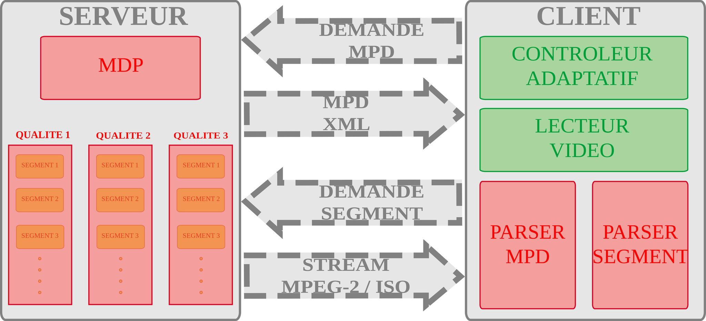
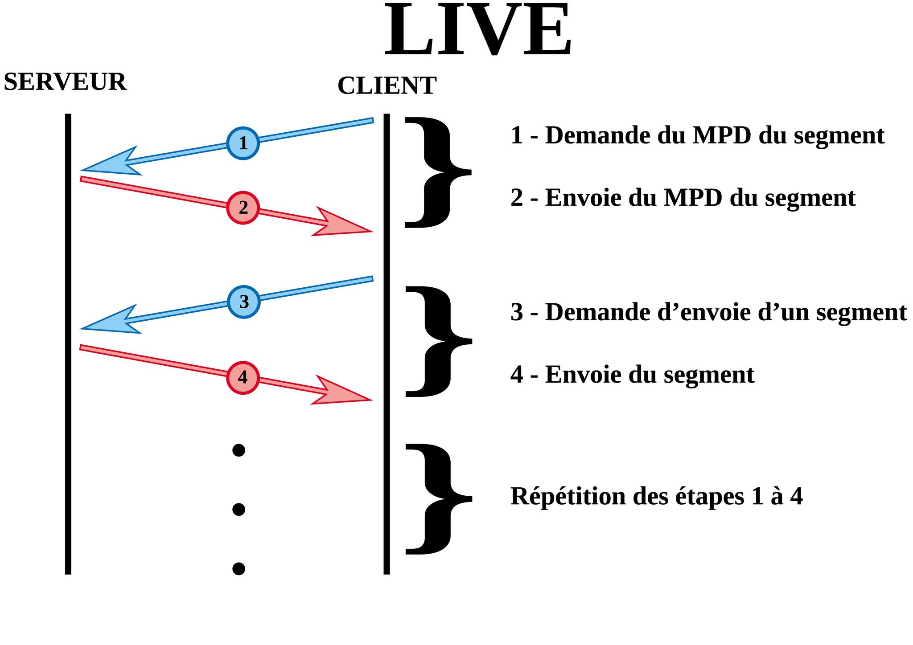

I. Introduction:
1. Histoire de MPEG DASH:
Le Moving Picture Expert Group, plus connu sous son acronyme MPEG, a commencé la conception du MPEG-DASH en 2010. Utilisé par de très grandes plateformes comme Youtube ou Netflix, le DASH est assez semblable au HLS dans son fonctionnement général : des fichiers séquencés répertoriés dans un fichier servant de playlist. La diffusion de contenu vidéo et audio via Internet a commencé à la fin des années 90, lorsque la vitesse d'Internet à l'époque ressemblait à celle d'un escargot. Microsoft avait son lecteur multimédia et ses normes (et protocoles), et Flash a fait une entrée via Macromedia. Bientôt Macromedia a été consommé par Adobe. Au début, tout le contenu vidéo et audio devait être complètement téléchargé avant d'être visionné. Cela a été exigé en raison des limitations de vitesse Internet et également en raison de processeurs à l'ancienne plus lents et cadencés par MegaHertz. Au fur et à mesure que l'Internet devenait plus robuste, le streaming devenait lentement plus réalisable ; l'industrie de la vidéo a présenté ses rendus haute définition (HD) - dans le monde «réel», la lutte était engagée à travers les disques DVD et Blue-Ray pour contenir des copies plus nettes et plus profondes d'un même film - et ainsi l'industrie Internet a accepté " segmenter les canaux vidéo, audio et texte et les diffuser via HTTP en tant que protocole de transport. Cependant, Microsoft a sorti son Silverlight et Apple ses normes HLS. Adobe a produit sa technologie HDS. À cette époque, en 2009, l'industrie du streaming de contenu ressentait le besoin de fusionner tous les formats existants en une seule entité et MPEG DASH était né. MPEG DASH était un outil de diffusion et non un CODEC ou une technologie.2. Standardisation
La technologie MPEG-DASH a été développée sous MPEG. Les travaux sur DASH ont commencé en 2010; il est devenu un projet de norme internationale en janvier 2011 et une norme internationale en novembre 2011. La norme MPEG-DASH a été publiée en avril 2012 mais a été révisée en 2019 sous la forme MPEG-DASH ISO / IEC 23009-1: 2019.II. Description du Protocole
Le standard de diffusion vidéo MPEG Dash comme dit précedement se base sur la préparation du contenu en différentes présentations de qualité et débit variable, découpées en segments de courte durée (quelques secondes) son fonctionnement général se résume dans le schéma suivant :

Nous avons donc ici du XML classique, chaque tag donnant des informations spécifiques. Voyons ensemble les tag principaux par ordre hiérarchique :
-
MPD :Décrit les métadata du fichier, sa version, la version du DASH utilisée, la durée total du contenu… -
AdaptationSet :Une adaptation est l’un des éléments du contenu, pas exemple la vidéo ou l’audio. -
ContentComponent :De manière assez similaire au tag précédent, le ContentComponent décrit exactement le type d’adaptation. -
Representation :La représentation décrit une version spécifique du contenu séquencé. Elle dispose d’un encodage qui lui est propre et c’est cet elément qui est utilisé par l’adaptive streaming, décrit dans la partie dédiée au HLS. -
BaseURL :L’URL de la séquence.
Ce schéma étant géneral pour les deux modes de fonctionnement Video on demand et live video, Dans les diagrammes suivants on détaillera la différence au niveau du diagramme de séquence des deux modes.
1. Description du Protocole pour VOD
2. Description du Protocole pour Live Videos

III. Avantages du protocole
- DRM : le DASH supporte les DRM, pour diffuser du contenu protégé.
- Codec au choix : Le DASH permet aussi d’utiliser n’importe quel codec audio/vidéo, ce qui le rend particulièrement adaptable.
- Mise à l'échelle (Scalability) : Le dash se base sur l'algorithme du contrôle adaptatif pour présenter au client une vidéo sans interruption.
- HTML 5: Le dash est supporté par le html5.
- Certifié ISO/IEC 23009 : Le seul à être standardisé et certfié ISO.S
IV. Demonstration
V. How To
VI. Référence
- LES PRINCIPAUX FORMATS DE FLUX VIDEO LIVE DASH, publié le 19/07/2019, auteur : Jérémy Bernard
- https://docs.unified-streaming.com/documentation/drm/mpeg-dash.html#adobe-primetime-drm
- https://ffmpeg.org/
- Reuban Gnana Asir-Kishore Kumar C- Praveen Kumar Reddy.M, MPEG-DASH Enhanced Multimedia Streaming, page 848 & 849
- https://mpeg.chiariglione.org/standards/mpeg-dash